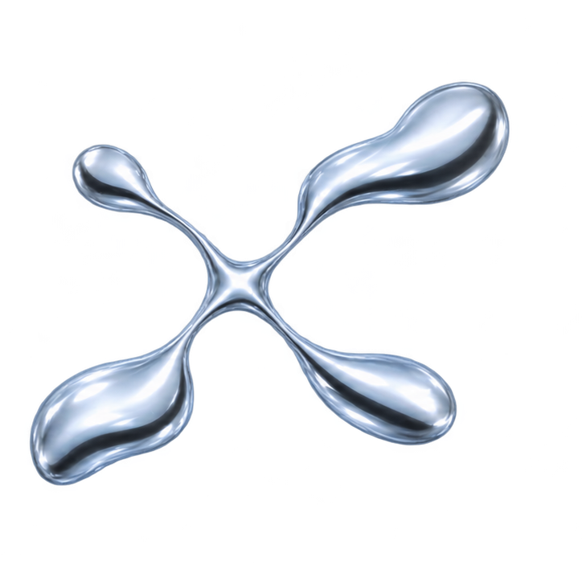
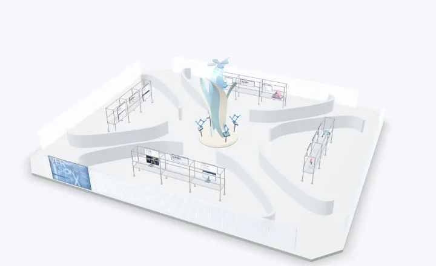

自动导览

浙江大学未来学习中心
X-Lab 训练营作品展暨浙江大学未来学习中心学生创造成果展
软件、硬件、设计、商业四个方向的大一同学，把从好奇与需求出发的灵感，创作成了可以被看见、被体验、被讨论的作品。
我们取名“未完之境”，意在如实呈现创造尚未收束的那一面：1900 年，希尔伯特没有清点已经完成的成就，而是以23个尚未解决的问题开启新世纪；眼前这些作品同样是“版本之外”的呈现，每一件都还遗留着尚没有答案的部分。
我们希望借这个展览，让创造被看见，也让仍在生长的想法，被认真地期待。


策展导言
Exhibition Introduction一件作品，何时才算真正完成？
当想法有了形态，当程序开始运行，当设计成为体验，我们似乎抵达了某个阶段的终点。然而，每一件作品背后，仍有未被看见的探索、尚未解答的疑问，以及持续发生的改变。
本次展览汇集 X-Lab 软件、硬件、设计、运营四个团队在暑期训练营中的创造与实践成果。来自不同学科背景的成员，从好奇与需求出发，在学习中积累知识，在实践中探索方法，在协作中调整判断，将最初的想法逐渐转化为可以被看见、体验和讨论的作品。
我们把这里称作「未完之境」。
“未完”并非成果的缺憾，而是创造持续生成的状态。每件作品背后，都有创造者与问题相遇、与伙伴交流、与自身局限磨合的经历。从动手尝试到反复调试，从获得反馈到重新判断，知识在实践中转化为能力，对“不够好”的觉察也成为改变的动力。作品逐渐成形的过程，同样是创造者认识自我、突破边界的过程。
四周展区呈现这些真实的创造故事，中央装置与 X-Lab 知识图谱则将不同的学习路径连接起来。软件、硬件、设计与运营在此交汇，不同的思维方式和专业能力通过交流与协作，共同构成开放的学习网络。
展览也希望成为一处持续发生交流的现场。蓝白便签构成开放的问答界面：参展者提出尚在思考的问题，观众留下疑问、回应与建议。不断增加的便签如同穿梭于作品之间的弹幕，让新的观点与可能在对话中产生。
1900 年，数学家希尔伯特提出 23 个尚待解决的问题，为此后数学研究的发展指引了方向。这份面向未知的追问提醒我们，探索的意义不仅在于获得答案，也在于不断发现值得思考的问题。
VERSION X，既记录着 X-Laber 已经走过的学习与创造之路，也指向尚未确定的下一种可能。作品之外，思考、交流与提问仍将继续。
未完，不是终点的缺席，而是下一次创造的开始。
愿每一位走入「未完之境」的人，都能在问题与回应之间，参与书写它尚未到来的下一页。
正在准备入馆镜头…